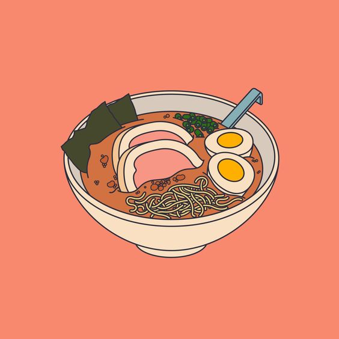

How Not to Be Bamboozled by Japanese Design
Japan is famous for its Zen Buddhist aesthetics. People come with certain expectations. They expect to find tranquil gardens, serene temples and exquisite calligraphy. The truth is Japan perfect is a myth. Modern day Japan is a cacophony of sights and sounds. Complete with glittering neon lights, haphazard architecture, snarled power lines and people everywhere. To appreciate the real Japan (outside of museums, public spaces and tourist attractions) you need to focus on identifying pockets of beauty. Through the frenzied haze of umbrellas, shopping bicycles and ubiquitous vending machines, you can find beauty and order within. The same principle applies to Japanese typography design. Written Japanese bamboozles many Westerners. Once you acclimatize, your mind opens to new possibilities. The cluttered look of menus, websites, newspapers and magazines takes getting used to. I assure you there is method to the madness of Japanese design.
Typography is the art of arranging type.
Your choice of typeface and how you make it work with layout, grid, color and so on makes the difference between good, bad and great design. Let me stop right here and reiterate that everything you know about typography is different in Japan. Japanese can be written left to right, or vertically top to bottom (with vertical lines proceeding from right to left). Sometimes both directions are combined on one page, which gives the impression of a cluttered layout. This is especially true for “chirashi” (fliers) distributed with newspapers and for posters displayed inside trains. Chaos theory — Not! When it comes to Japanese typography, please bear in mind — there’s a Culture Gap.
Why use one alphabet when you can have three!
Written Japanese is very different from English. It uses a combination of Kanji, Hiragana and Katakana alphabets. Kanji (Chinese characters) are used for nouns. There are over 2,000 Kanji symbols used in everyday Japanese writing. Hiragana (simplified Kanji) is used for adjectives and verbs. Katakana is used to render “borrowed words” from other languages. The 3 alphabet system renders Japanese a most readable and compact language. It takes up less space than English to convey nuances (as much as 20–30% less on a single page). Japanese people are trained to scan by focusing on Kanji (the nouns) to quickly find the items they need. This is why you will often find a lot of content upfront on Japanese websites and in brochures. The inverted pyramid of Information Design has not landed much of a foothold in Japan. Western eyes scan differently. White space is helpful to isolate messages on the page. This makes sense when you consider that our Roman alphabet is made up of 24 letters. Strung together in sentences there is little to distinguish between words on a page. This is why longish paragraphs in English (like this one) can appear dense and impenetrable. An “inverted pyramid” is used for mass communication in Western culture. The most newsworthy items come first, followed by background details. This stalwart of information design has not landed much of a foothold in Japan. Japanese typography is fit-for-purpose in Japan. As you can see, there is little merit in judging Japanese typography design by Western standards. In a different context, different principles apply.